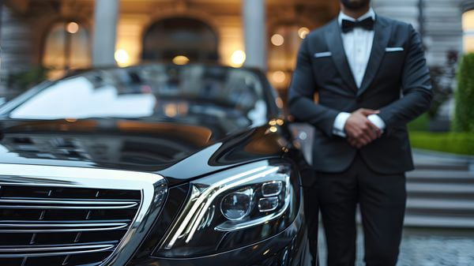

Traveling to or from the airport with family can be both exciting and stressful. Coordinating schedules, managing luggage, ensuring everyone arrives on time, and dealing with traffic or parking can turn what should be a smooth start to a trip into a complicated experience. For families traveling through busy airports like O’Hare, choosing professional limousine transportation has become an increasingly popular option. A limo service offers convenience, comfort, reliability, and safety, making it an appealing solution for family airport travel.

Many families today prefer professional airport transportation because it removes much of the stress associated with travel logistics. With spacious vehicles, professional chauffeurs, and reliable scheduling, limo services provide a seamless travel experience that allows families to focus on enjoying their journey rather than worrying about transportation challenges.
Comfortable and Spacious Travel for Families
One of the main reasons families choose a limo service for airport travel is the level of comfort and space provided. Traveling with children, elderly relatives, or multiple family members often means carrying several suitcases, backpacks, strollers, or other items. Standard taxis or ride-sharing vehicles may not always offer enough room to accommodate both passengers and luggage comfortably.
Limousine services typically provide larger vehicles designed to handle group transportation. SUVs, luxury vans, and stretch limousines provide ample space for passengers to sit comfortably without feeling cramped. This extra room makes the journey to the airport much more relaxing, especially for longer drives.
Families also appreciate the comfortable seating and climate control features that many luxury vehicles offer. Children can relax, parents can organize travel documents, and everyone can enjoy a peaceful ride without the usual stress of crowded transportation options.
Stress-Free Airport Transfers
Airport travel can involve numerous logistical challenges, particularly when traveling as a family. From coordinating departure times to managing baggage and navigating heavy traffic, the process can quickly become overwhelming.
Professional limo services help eliminate these concerns by offering pre-scheduled transportation. When families book a limo service in advance, they can rely on the vehicle arriving exactly when needed. This allows them to avoid last-minute rushes or unexpected delays.
Chauffeurs are also experienced in handling airport transportation, which means they understand the best routes, traffic patterns, and timing required to reach the airport efficiently. Their knowledge helps ensure families arrive on time without the anxiety of navigating unfamiliar roads or dealing with unpredictable traffic conditions.
Professional Chauffeurs Provide Reliable Service
The presence of a professional chauffeur is another key reason families choose limo services for airport transportation. Professional drivers are trained to deliver high-quality service while prioritizing passenger safety and comfort.
Chauffeurs typically undergo background checks, professional training, and driving evaluations before they are allowed to transport passengers. This ensures that families can trust the person responsible for their journey.
In addition to their driving expertise, chauffeurs often provide courteous and attentive service. They assist with luggage, help passengers enter and exit the vehicle safely, and maintain a professional demeanor throughout the trip. For families traveling with children or elderly members, this level of support can make a significant difference in the overall travel experience.
Safe and Secure Transportation
Safety is a top priority for families when choosing transportation to the airport. Limo services often maintain high safety standards by regularly inspecting and maintaining their vehicles. This attention to detail helps ensure that every vehicle on the road is in excellent working condition.
Luxury transportation companies typically follow strict safety guidelines, including vehicle maintenance schedules, driver training programs, and safety monitoring systems. These practices contribute to a safer travel experience for passengers.
For families traveling with young children, safety is especially important. Professional chauffeurs drive responsibly and are experienced in managing different road conditions, which helps reduce the risks associated with rushed or inexperienced drivers.
Convenient Door-to-Door Service
Another advantage of choosing a limo service for airport transportation is the convenience of door-to-door service. Families do not have to worry about driving themselves to the airport, searching for parking, or dragging luggage across large parking lots.
With a limousine service, the vehicle arrives directly at the family’s home or chosen pickup location. The chauffeur loads the luggage and ensures that everyone is comfortably seated before departing for the airport.
Upon arrival at the airport, the chauffeur drops passengers off at the appropriate terminal entrance. This streamlined process saves time and reduces the physical strain associated with transporting heavy bags or navigating crowded airport parking facilities.
Easy Travel for Families with Children
Traveling with children requires extra preparation and patience. Kids may become restless during long car rides, and parents often have to manage snacks, entertainment, and travel essentials.
Limousine services provide a more comfortable and relaxed environment that can make the journey easier for children. Spacious seating allows kids to stretch out and remain comfortable throughout the ride. Parents can organize their belongings, ensure children are ready for the flight, and handle last-minute travel preparations without feeling rushed.
The smooth and quiet ride offered by luxury vehicles can also help keep children calm before a flight. Instead of dealing with the unpredictability of standard transportation, families can enjoy a controlled and comfortable travel environment.
Efficient Handling of Luggage
Family travel often involves multiple suitcases, carry-on bags, and additional travel items. Handling all this luggage can be one of the most stressful parts of airport transportation.
Limousine services typically include luggage assistance as part of their standard service. Chauffeurs help load and unload bags, ensuring that everything is handled carefully and efficiently. This assistance saves time and reduces the physical effort required from family members.
Additionally, larger luxury vehicles have generous storage space for luggage. This allows families to bring everything they need without worrying about limited trunk space or overcrowded seating areas.
Reliable Scheduling for Early or Late Flights
Airport schedules often require families to travel very early in the morning or late at night. Finding reliable transportation during these hours can sometimes be difficult with standard taxi or ride-sharing services.
Limo services provide reliable scheduling that operates according to the family’s travel plans. When transportation is booked in advance, the vehicle arrives precisely at the scheduled time regardless of the hour.
This reliability is especially valuable for families catching early flights or arriving at the airport late at night after long trips. Knowing that transportation is already arranged helps families avoid unnecessary stress and uncertainty.
Smooth Airport Pickups After a Trip
The convenience of limo services extends beyond airport drop-offs. Families returning from vacation or business trips often appreciate having a professional vehicle waiting to take them home.
After a long flight, the last thing most travelers want is to search for transportation or stand in line for a taxi. With prearranged limo service, families can leave the airport and immediately begin their ride home.
Chauffeurs monitor flight schedules to track arrival times and adjust pickup times if flights are delayed. This level of coordination ensures that families always have reliable transportation waiting for them.
A Relaxing Start and End to Family Trips
Family vacations and trips should begin and end on a positive note. Stressful transportation experiences can affect the mood of travelers before they even reach the airport.
Choosing a limousine service helps create a calm and enjoyable start to the journey. Families can relax, chat, review travel plans, or simply enjoy the ride while a professional driver handles the road.
At the end of a trip, the comfort of a luxury vehicle offers a welcome break after long flights and busy airport terminals. Instead of worrying about driving home while tired, families can sit back and unwind during the ride.
Cost Efficiency for Larger Groups
While some people assume limousine services are only for luxury travelers, they can actually be cost-effective for families traveling together. When transportation costs are shared among several family members, the price may be comparable to or even lower than multiple taxis or ride-sharing vehicles.
In addition to the potential cost savings, families receive added value through comfort, reliability, and convenience. The combination of these benefits often makes limo services a practical choice for group airport travel.
A Memorable Travel Experience
Beyond convenience and practicality, limousine transportation can add a special touch to family travel. Riding in a luxury vehicle can make the airport journey feel more exciting, especially for children who may find the experience unique and memorable.
Special family occasions such as vacations, reunions, or milestone celebrations can feel even more meaningful when transportation is part of the overall experience. The sense of comfort and elegance that comes with limousine travel can make the entire trip feel more enjoyable from the very beginning.